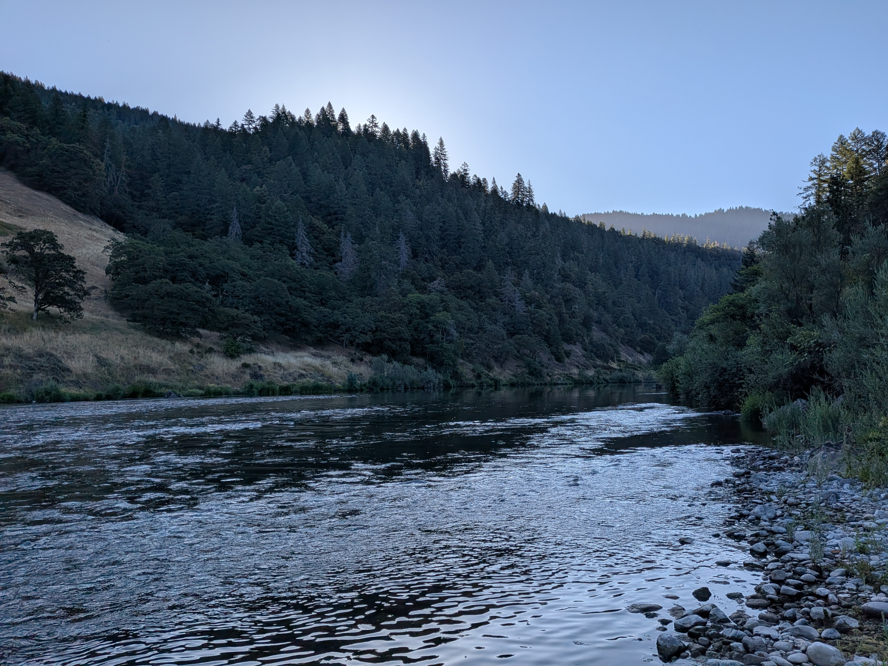
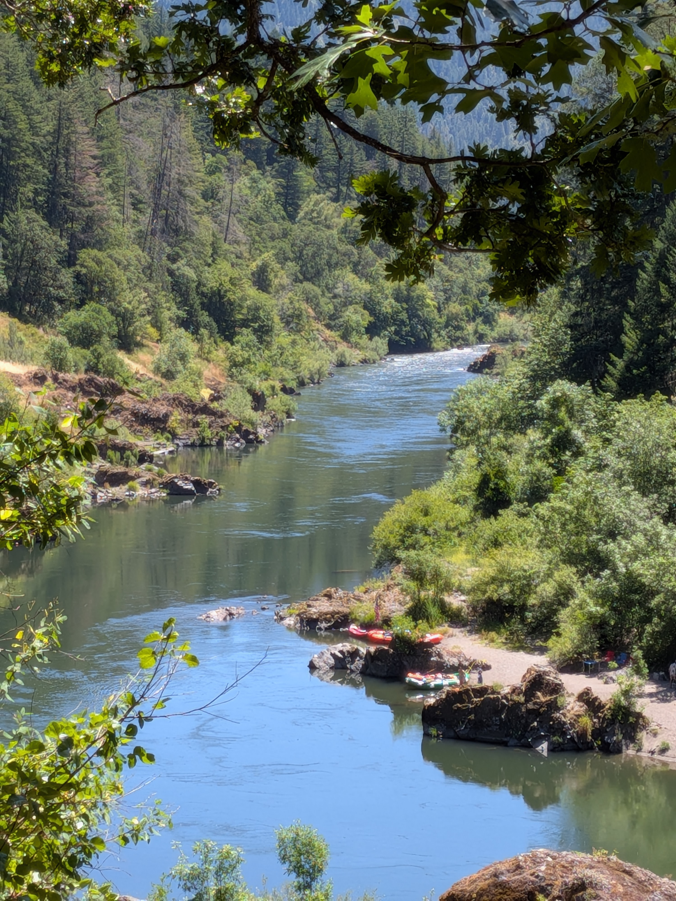

The Rogue River Trail approximately contours the Wild and Scenic section of the Rogue River. It is frequently done as a through hike by backpackers and is xx miles end to end. I was rafting the Rogue and my party was taking a zero day, so I decided to trail run as much as possible of the trail while still being back in time for afternoon margaritas.
The trail was on the other side of the river, but Jason offered to ferry me across. I had to bushwhack a hundred yards uphill through some prime tick territory, but the trail was obvious once I saw it. I headed West, optimistically hoping to make it to Rogue River Ranch, which was about 5 miles away, as the crow flies.

I found the trail to be impressively overgrown, and managed to get an arm full of raspberry thorns. Lots of poison oak as well; this was another piece of evidence for my theory that I am immune to it. I definitely brushed by enough of it that I would have expected to react. The trekking poles that I had doggedly packed down the river were an absolute godsend.

I came across one thru hiker, who was actually yo-yo-ing the trail. The trail didn't have great views of the river for the most part, but I could almost always see it. When the trail descended to the river, or there was a clearing, the river was gorgeous. I passed perhaps 10 rafting parties on my way. I hit my turnaround time about a mile shy of Rogue River Ranch.
I had brought a dry back with me because I had originally be planning to swim across, and had left it at the spot where I had gotten on the trail as a marker for myself. I didn't want to ask anyone to row across for me and I was pretty hot from the run, so I happily pack my clothes away in the dry bag and jumped in the river. Swimming with the dry bag was a bit awkward, and I had a moment of worry that I would get swept past the camp, but a year of masters swimming had paid off and I was able to just make it.
Jason was waiting for me with a cold beer when I finished the crossing.